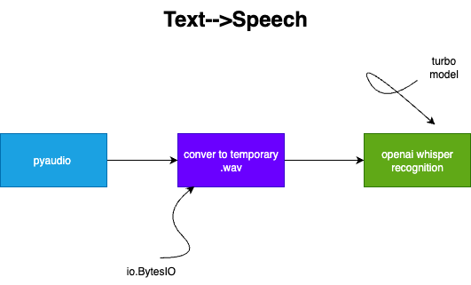
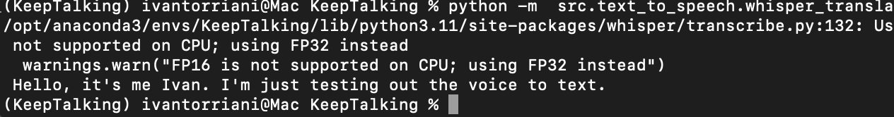

Text to Speech with Whisper and PyAudio
August , 2025

Welcome to the first blog for the KeepTalking project. Just as a few starting points, I still have my LLM project going on where I am still training and iterating through different models. I also have the fertilizer project going on, and I also plan to use this project in another capacity for the club at school. All goes to say that I probably won't heavily go into this project over the summer as I did with the LLM. However, I will work on it a little bit. This project, I want to do much better with the documentation, iterations, and whatnot using sphinx. I want to make sure the project is completely open source and can be run on all types of hardware, so always using efficient algorithms and whatnot. Lastly, I want to make sure the code is organized well so I'm going to be using Google's style guide.

Today I worked on the text to speech component. I visited whisper's repo and realized very early on that it took mp3 files as input and it transcribed from these files. This made me think, initially, that it would not be so efficient in real time text transcription. This made me look up creator repos that focused on using whisper for real time. Then, I realized that I could possibly just use speech recongition libraries. It seemed like they were capable of basic translation. However, I eventually settled on whisper because it was developed on an extensive model that could recognize multiple types of voices, accents, filter background noises, etc, so it just seemed like a more robust problem
However the problem with whisper remained, which was the fact that it only took .mp3 or .wav files as inputs. The first thing I needed to figure out was what service I could use in order to create .wav files. I found out about pyaudio, read it's documentation and a couple youtube videos, and wrote a boiler plate on setting up the stream. from here, I also learned how to write a simple function in order to save the file. But another problem was that, in my idea, I was already going to be saving the chat logs in SQL lite as text, I wasn't going to save the binary versions of audio files which seemed like they would take up a lot of space. I found some pretty cool technology from the io library. The gist is that it allows you to save different types of files, whether they be .wav, pdfs, images, usually things written in bytes or binary code in memory instead of in my files. Therefore, when runtime was over it would delete. I learned how to save the files in memory using this and I was set up to push the files into whisper
From this point on it was pretty simple, all I had to do was set up the whisper model, debug a couple little things like how whisper actually expected the files in a np array format, of a specific coding and whatnot. I set the model to 'turbo' so that it's quicker, and was successful in getting it to translate me. I actually remembered a time in highschool, senior year, when I was doing a similiar type of project with the OpenAI API and I think I used the old speech reognition model. I remembered that it really wasn't that great, it didn't pick up commas, stutters, couldn't disect difficult sentences or filter out background noises. So it's really impressive how much technology has came in only 2 years.

On some final notes, here's what's next. Right now, the amount of time the stream is on ( as in how long it records my voice) is a constant. If I want to acheive advanced voice capabilites, I'm going to need that limit to be dynamic. Thankfully, I have a good idea on how to do that based on the whisper_real_time demo I saw earlier -- I'm going to need to track how long the user is silent for, or when they stopped talking. So once they stop talking, I'll end the stream and then it'll be processed to text. This will definitely be a challenge. The other thing is that right now, even on this m4 chip, using the turbo model, it's pretty slow. It might be because I'm having to wait the constant amount of time for the program to finish, even if I finish early, but regardless I noticed some repos having to use data structure like queue so there must be an efficency issue with whisper. I also saw many faster whisper extension repos, so that might be an issue. I think if I shoudl focus on developing this capability really well, taking inspiration from conversations with voice models to see what I don't like about them and what I do like to adjust this product.